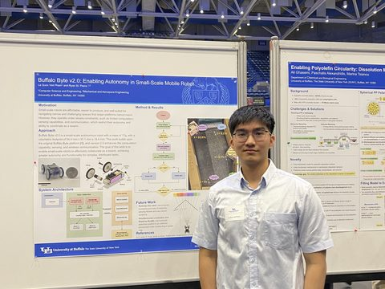
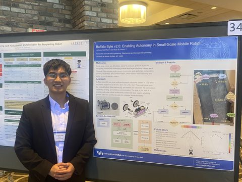
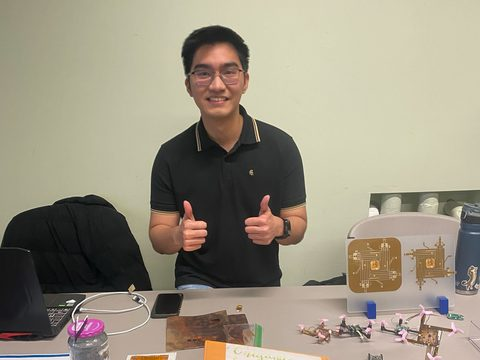
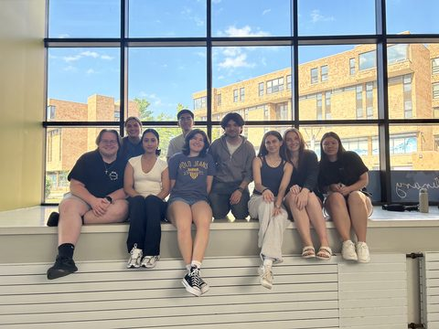
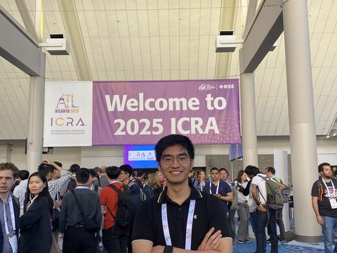

Hackathon.
Recent updates from my academic, research, and leadership activities.
Hackathon.
Hackathon.
IROS conference.
Welcome weekend leader.
Volunteered at the Hack the 6ix hackathon, contributing to the development of innovative solutions for social challenges.

Showcased research on small-scale robotics at the University at Buffalo's Student Showcase, exploring how computational, sensing, and communication constraints shape the design and performance of autonomous robotic systems.

Traveled to New Orleans to present research and connect with undergraduate researchers, PhD students, and faculty at the CRA UR2PhD Workshop, gaining insights into graduate school pathways and the academic research landscape.

Presented research work from the UB Robot Form and Function Lab during Engineering Week, engaging the public with interactive robotics demonstrations.
Participated in the University at Buffalo's leadership conference focused on mentorship, professional development, and community leadership.

Started the training program to serve as a Resident Assistant, developing leadership, crisis management, and community engagement skills.

Participated in the Undergraduate Outreach Workshop at the IEEE International Conference on Robotics and Automation (ICRA 2025), exploring emerging robotics research and networking with researchers.